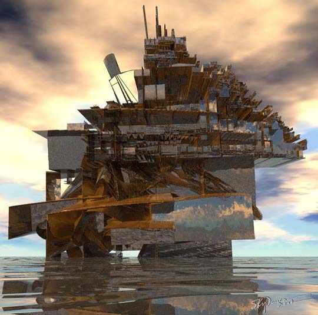

Skydancer
drawing with light
Skydancer
drawing with light
In Memoriam Born in 1939, Skydancer has long been an award-winning artist. Her style, she says, is whatever the moment calls for. She brings to computer art a dramatic array of talents and techniques. She can draw, paint, sculpt and more. She commands an impressive library of software tools, including Bryce, Painter, Photoshop, Poser, XenoDream (beta), Fo2PiX, and various modelers, plug-ins and filters to these programs. The following images were mostly rendered in Bryce, very often from art drawn or rendered in other programs and finally post-processed in Photoshop. Her ability to integrate the output of these various software programs is a hallmark of her work. Her art is spiritually-driven, and she is a student of Buddhism, the martial arts and shamanism. She says she draws with light.April 19, 1939 - August 10, 2007
Structure
 |